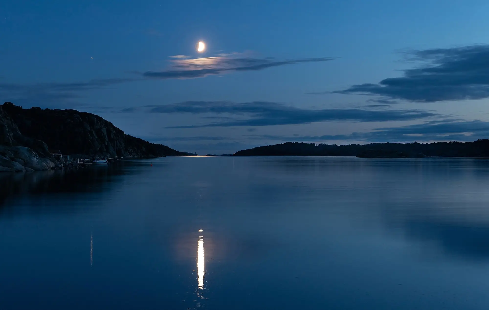
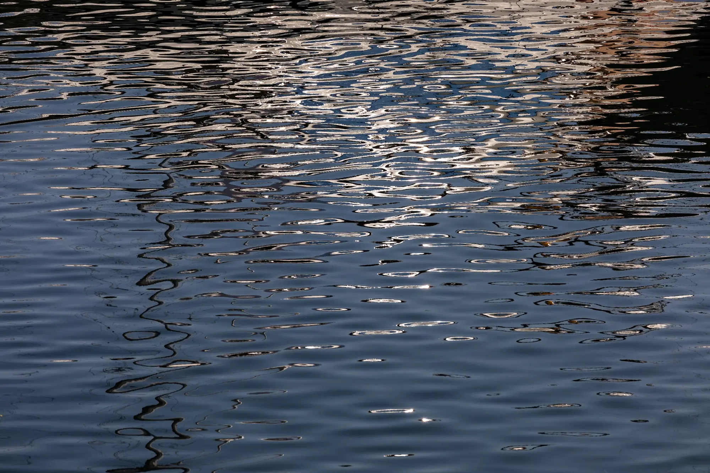
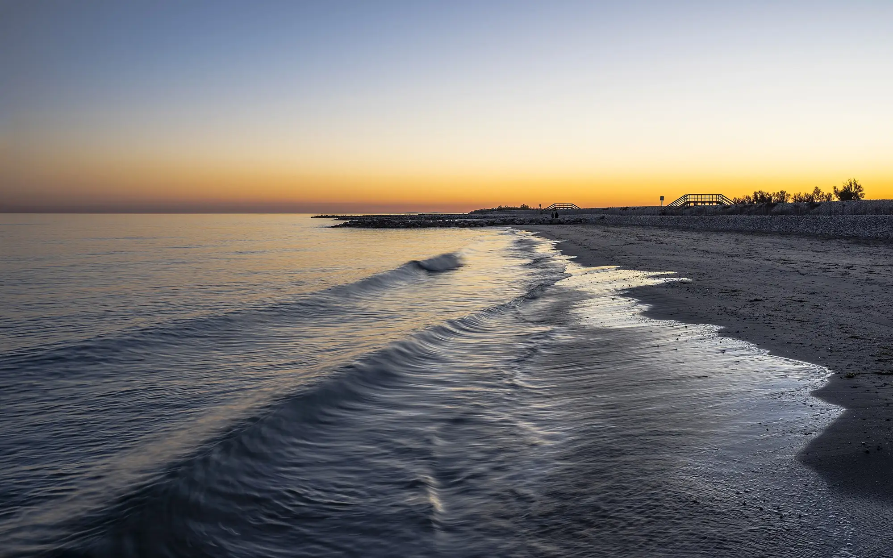

Cancer Evidence Explorer
Which exposures can cause which cancers, and how sure the evidence is for each link. From the IARC Monographs.
- Exposures
- 185
- Cancer types
- 68
- Links
- 469
In 10 languages

Free tools built from the IARC Monographs and published reviews by Wenxin Wan, a cancer epidemiologist.
They describe whole populations, not what caused any one person’s illness.
Tobacco smoking and processed meat are both in Group 1: the evidence that each can cause cancer is equally sure. The risks are not.
Lung cancer by age 75, drawn to one scale. About 10 to 12 in 100 smokers; the paler tip is the range.
18%
Each 50 grams of processed meat eaten every day raises the risk of bowel cancer by 18%.
European data. Quoted from the Cancer Evidence Explorer.
Seven ideas for reading a health headline →


Free, and each in 10 languages.
Which exposures can cause which cancers, and how sure the evidence is for each link. From the IARC Monographs.
In 10 languages
Risk factors for heart disease, stroke, type 2 diabetes, dementia and more, graded by how strong the evidence is.
In 10 languages
The official recommendations for lowering your own cancer risk, coordinated by IARC (WHO) and its partners.
Read the recommendations14 actions for Europe
17 for Latin America and the Caribbean

Learning by playing — three games.